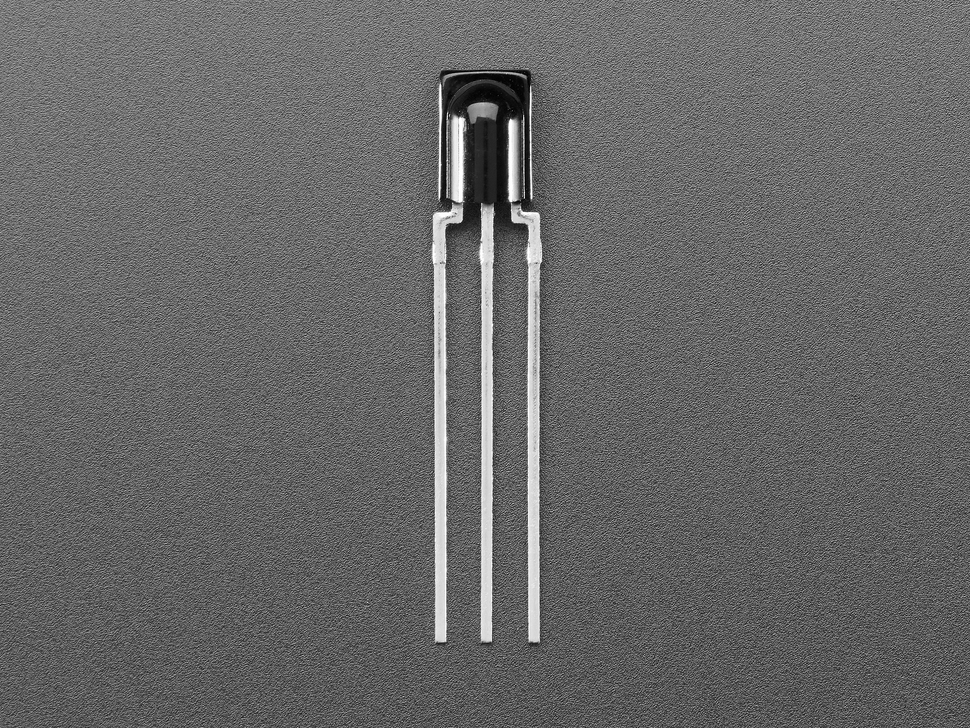

<!doctype html><html lang="ko"><meta charset="utf-8"><script type="module" src="https://unpkg.com/@wokwi/elements@1.9.2/dist/wokwi-elements.bundle.js"></script><style>@font-face{font-family:Pretendard;src:url('/assets/Pretendard-Regular.ttf')}*{box-sizing:border-box}body{margin:0;font-family:Pretendard}.canvas{position:relative;width:1200px;height:760px;background:white;overflow:hidden}.label{position:absolute;font-size:24px;line-height:1.5;background:white;padding:5px}h1{position:absolute;left:24px;top:12px;font-size:30px;color:#315DAB;margin:0}.wires{position:absolute;inset:0}.wires path{fill:none;stroke-width:5;stroke-linecap:round;stroke-linejoin:round}</style><main class="canvas"><h1>UNO R3 + TSOP38238 · 둥근 렌즈가 보이는 정면</h1><wokwi-arduino-uno style="position:absolute;left:40px;top:160px;transform:scale(1.6);transform-origin:top left"></wokwi-arduino-uno><svg class="wires" width="1200" height="760"><path data-net="OUT" stroke="#c18c00" d="M418.4 174.4 V120 H560 V580 H864 V542.8"/><path data-net="GND" stroke="#222" d="M311.2 466.4 V620 H891.6 V542.8"/><path data-net="VS" stroke="#dc3647" d="M296 466.4 V650 H920.4 V542.8"/></svg><div class="label" style="left:45px;top:65px">UNO R3 · D2: 노랑<br>GND: 검정 · 5V: 빨강</div><div class="label" style="left:625px;top:65px">TSOP38238 · 앞면<br>왼쪽 1 OUT / 가운데 2 GND / 오른쪽 3 VS</div><div class="label" style="left:30px;top:681px">USB를 빼고 배선 · 다른 제품의 핀 순서는 공식 자료로 확인</div><div style="position:absolute;left:30px;bottom:8px;font-size:15px">실제 제품 사진: Adafruit 157-05 · UNO 도형: Wokwi MIT · 배선/라벨 추가 · 실행 시뮬레이션 아님</div></main></html>